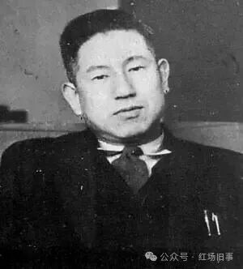
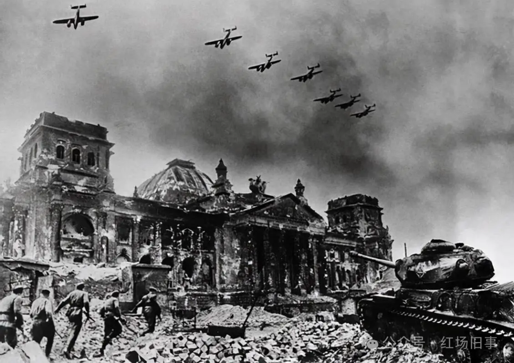
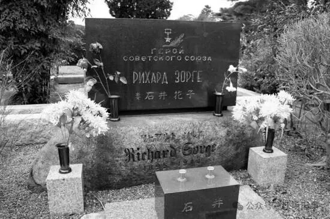
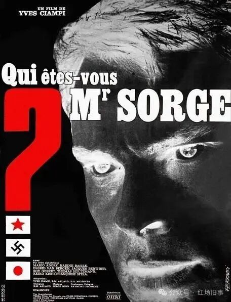
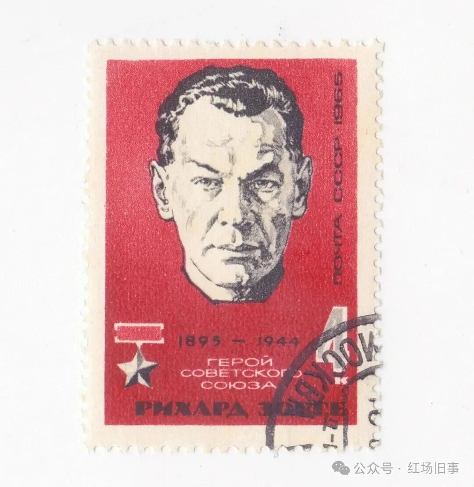

楔子：1941年东京的绞刑架
1944年11月7日，东京巢鸭监狱。
这一天是十月革命27周年纪念日，理查德·佐尔格平静地走出牢房，用日语对同监的日共成员中西功说了一句：“再见了，朋友。”随后，他被带往刑场，在绞刑架上结束了自己49岁的生命。
三年刑讯，他从未吐露一个字。而在三年前的那个夏天，他曾向莫斯科发出改变二战进程的预警——“德军将于6月22日进攻苏联，兵力170—190个师，进攻方向完全查明。”六天后，550万德军从波罗的海到黑海全线压境。战争第一天，苏军损失战机约1200架，西部防线土崩瓦解。
佐尔格的情报为何被无视？如果苏联采信相信他，苏联能否避免战争初期的溃败？
一、东京谍网：潜伏在德日心脏的“拉姆扎”
1933年9月，佐尔格以德国《法兰克福报》驻东京特派记者的身份抵达日本。他的公开身份是德国记者、纳粹党员——这些都不是伪装：他确实于1934年正式加入纳粹党，为的是更好地掩护自己。
在东京，他组建了代号“拉姆扎”的情报网。核心成员包括：
尾崎秀实：日本首相近卫文麿的私人秘书，可参加首相智囊团会议，能接触日本最高决策；马克斯·克劳森：德国人，负责发报；勃兰科·伏开利克：南斯拉夫人，负责联络。

尾崎秀实
佐尔格不是普通的间谍。他是政治学博士，对东亚问题的分析深得德国驻日大使馆赏识。他帮助使馆武官尤金·奥特撰写政治分析报告，使奥特平步青云升至驻日大使。作为回报，佐尔格得以自由出入大使馆，翻阅所有机密文件，德国大使馆成了苏联间谍最安全的情报源。
二、三次预警：最精确的情报为何被否
从1940年底开始，佐尔格连续向莫斯科发出预警。
第一次预警（1940年12月）：德国已签署巴巴罗萨计划，将进攻苏联。
第二次预警（1941年5月）：进攻日期为6月20日或22日，兵力170—190个师。
第三次预警（1941年6月）：再次确认6月22日进攻，方向为列宁格勒—莫斯科—基辅。
佐尔格的电报极其详尽。德国总参谋部发给驻日武官的指令中，明确提及“东线战事即将开始”。这些文件佐尔格都能看到。然而，莫斯科的回复一次次让他心凉：“我们怀疑你的情报可靠性。”
不仅是佐尔格，苏联在欧洲的情报网也发回大量类似信息。苏联驻德军事专员图皮科夫少将1941年4月就报告：“苏联是德国计划中的下一个打击目标，行动开始的时间或许提前，毫无疑问就在今年。”
三、另一个预言：决定莫斯科命运的判断
1941年9月，德军兵临莫斯科城下。苏联面临最危急的时刻：德、意、日三国军事同盟已经签订，日本关东军在满洲集结70万重兵，随时可能从远东进攻苏联。苏联高层急需判断：日本会不会动手？

9月6日，佐尔格从东京发来密电：“只要远东红军保持一定的战斗力，那么日本就不会发动进攻。”10月4日，他再次电告莫斯科：“苏联的远东地区可以认为是安全的，来自日本方面的威胁已排除。日本不可能发动对苏战争，相反，日军将在几周内向美国开战。”这两封电报，与之前被忽视的德国进攻预警截然不同。他当即下令：从远东集团军抽调11个师、25万兵力、近千辆坦克和一千多架飞机，火速西调增援莫斯科。这些部队在12月6日的反攻中发挥了决定性作用：苏军一举击溃德军50个师，毙伤38万余人，取得了卫国战争以来的第一个大胜利。“巴巴罗萨”计划宣告破产。
佐尔格的两个预言，一个被忽视，一个被采纳。被忽视的那个，让苏联付出了战争初期的惨重代价；被采纳的那个，挽救了莫斯科，也挽救了整个战局。
四、误判根源：国际环境的错综复杂
为什么对德国的战争预警被忽视，对日本的判断却被采纳？
第一层原因：信息洪流中的筛选困境。莫洛托夫后来回忆：“当我任苏联人民委员会主席的时候，每天我都用半天的时间来研究侦察人员的情报。那些情报中什么都有！曾报告过很多进攻日期！如果我们听信了这些情报，那么战争可能要开始得早很多。”据统计，1941年上半年，苏联情报机构收到的各类预警超过80份，进攻日期从4月到6月各种说法都有。佐尔格自己也是从“播种季节后”到“五月底”再到“六月底”，多次调整。事后看最后一次正确，但在当时，谁能确定哪一份是真实的？
第二层原因：理性的自负。斯大林坚信希特勒不会重犯一战德国两线作战的错误，这种心理，直到战争爆发前夕都未改变。而日本的战略选择符合他的判断：日本更可能南下与英美争夺太平洋，而不是北上进攻苏联。
第三层原因：恐惧制造的信息扭曲。情报官员们太清楚斯大林想要什么——他们不敢把不符合领袖预期的情报直接呈报，而是层层筛选、过滤、修饰。
信息被过滤成领袖想听的话，领袖再做判断时，手里已经没有了真相。
五、暴露牺牲：莫斯科为何不救
1941年10月，日本特高课破获佐尔格情报网。
暴露的导火索有两条：一是日共成员被捕后供出“拉姆扎”成员；二是佐尔格的日本情人石井花子无意中从他家中拿走一只伪装成打火机的微型相机，被特高课搜出。
佐尔格被捕后，日本人没有立即处死他。他们希望用他交换被苏联关押的日本战俘。日本通过外交渠道试探苏联，得到的回复却是：“佐尔格？不知道这个人。”苏联拒绝承认佐尔格的身份。原因不难理解：承认佐尔格是苏联间谍，就等于承认苏联在日本从事间谍活动，可能给日本进攻苏联的借口。此时苏联正全力应对德国，绝不能两线作战。
佐尔格在狱中三年，受尽酷刑，始终没有松口。1944年11月7日，他被执行绞刑。

佐尔格在东京多磨陵园的墓碑
他用自己的沉默，守住了苏联的最后一道防线。
六、身后平反：迟来二十年的英雄
1964年，赫鲁晓夫偶然看到一部法国电影《你是谁，佐尔格博士？》。电影讲述一位德国人为苏联工作的故事。赫鲁晓夫起初以为只是虚构，旁边的人告诉他：“这是真人真事。”
他调来尘封多年的档案，真相浮出水面。

《佐尔格博士，你是谁？》电影海报
1964年11月7日——佐尔格牺牲二十周年忌日——苏联追授他“苏联英雄”称号。莫斯科一条大街以佐尔格命名，苏联一艘油轮也冠以他的名字。1965年，苏联发行佐尔格纪念邮票。1985年，反法西斯战争胜利四十周年，莫斯科佐尔格大街竖起他的塑像和纪念碑。

互动推理
佐尔格的命运，是情报史上最悲壮的篇章之一。你认为，苏联拒绝相信佐尔格的最主要原因是什么？
欢迎在评论区分享你的想法。
下一期预告：福克斯与罗森伯格夫妇的核密码
1949年8月29日，苏联第一颗原子弹试爆成功。美国人大惊失色——他们原以为苏联至少还需要五年。“曼哈顿计划”的绝密情报，如何流向莫斯科？
下期，还原那场“史上最大情报盗窃案”。
第1期 戴笠追捕、中统悬赏、日本特高课全程盯梢：那个让三方头痛的“红色谍王”